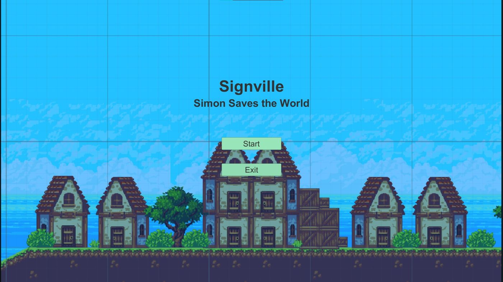

Signville
March 2022 - March 2022


Technologies Used
Summary
Designed and developed a 2D platformer game in my Game Design course during a weeklong game jam. The video game uses the Unity engine with the Sunny Land asset pack.
Goals
- Create a solo game jam game with the theme “signs”.
Constraints
- Time limited to only one week.
Timeline
Intro
To start the project, I came up with the idea of creating an action 2D platformer due to my familiarity with the Unity engine and the experience I got from the first game I built. After getting a rough idea and concept that I wanted to create, I next looked at some free game assets on Unity's asset store. The asset pack that I chose was the Sunny Land asset pack, which was used for the background and level design of the game. After getting the assets imported into the Unity engine, I started to code the basic movement of the main character. Once that was accomplished, I next used Unity's 2D tile map feature to design the level. This led to the creation of the dock, village, and cave on the level.
Charaters
During the game jam, I wanted to be creative and create two of the characters from scratch. For there, I turned to the open-source drawing software Krita to draw the main character and the blacksmith. Krita is unique since it had a built-in animator that helped me animate the player attacking, walking, and idle state. Once the characters had been drawn and animated, it was time to create the first level.
Intro Level
The goal was a short introductory level where the player could get adjusted to the movement mechanics and the basic story. Due to time, I decided to use the same level design for the second level as well.
Health Bar
For the health bar, I created an empty container with a red bar inside of it. When the player walked over the enemy sprite, it would decrease the health value associated with the container. When the scene switches to the second level or it refreshes, the scene displays the health bar and sets the initial health bar to the maximum level.
Enemies
For the enemies, I decided to go with the possum sprite that came with the sunny land asset pack due to a lack of time. For the enemy AI, I coded it to infinitely move in one direction and flip after a certain time. When the timer in the sprite is up, the sprite's direction will be flipped and moved in the opposite direction. This way I could have different speeds and timers to fit the versatile design of the level and the weeklong time constraint.
Story Logic
Lastly, I coded the story logic to transition the first level to the second level and the final ending of the game. To accomplish this, I detected if the player sprite is inside of the story object and transition to the next scene.
Challenges
- Efficiently scheduling time to design and create the game in a week.
- Balancing out other courses that was currently taking.
- Familiarity with the Unity engine.
Lessons Learned
- The more you practice creating games or art, the better you become at them.
- The player's attack sprite animation could have been more impactful.
Tags
- #Game Design
- #Game Development
- #Unity
- #C#
- #Krita
- #.NET
The use of programming languages, organizational, and technology logos on this site is solely for demonstrating the relevant technologies and complies with the respective brand guidelines. The organizations referenced do not affiliate with, sponsor, or endorse any content, project, or application on this site.